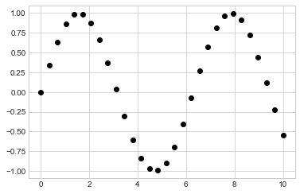
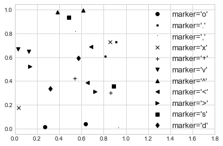
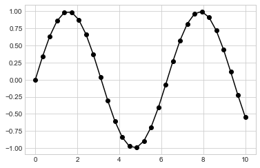
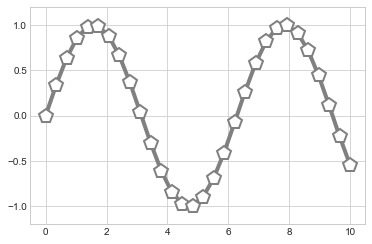
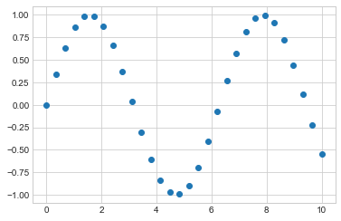
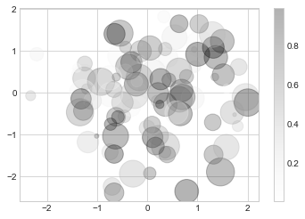
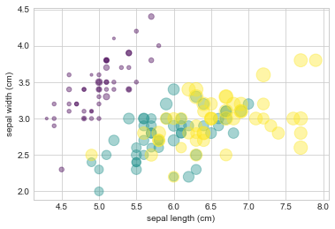

%matplotlib inline
import matplotlib.pyplot as plt
plt.style.use('seaborn-whitegrid')
import numpy as np단순 산점도
일반적으로 사용되는 또 다른 플롯 유형은 선 플롯의 가까운 사촌인 단순 산점도입니다. 점들이 선분으로 결합되는 대신 점, 원 또는 기타 모양으로 개별적으로 표시됩니다. 우리가 사용할 패키지를 플로팅하고 가져오기 위해 노트북을 설정하는 것부터 시작하겠습니다.
plt.plot을 사용한 산점도
이전 장에서 우리는 plt.plot/ax.plot을 사용하여 선 그래프를 생성하는 방법을 살펴보았습니다. 이 동일한 함수는 분산형 차트도 생성할 수 있는 것으로 나타났습니다(다음 그림 참조).
x = np.linspace(0, 10, 30)
y = np.sin(x)
plt.plot(x, y, 'o', color='black');
함수 호출의 세 번째 인수는 플로팅에 사용되는 기호 유형을 나타내는 문자입니다. 선 스타일을 제어하기 위해 '-' 또는 '--'와 같은 옵션을 지정할 수 있는 것처럼 마커 스타일에는 고유한 짧은 문자열 코드 세트가 있습니다. 사용 가능한 기호의 전체 목록은 plt.plot 문서 또는 Matplotlib의 온라인 문서에서 확인할 수 있습니다. 대부분의 가능성은 매우 직관적이며, 보다 일반적인 여러 가지 가능성이 여기에 설명되어 있습니다(다음 그림 참조).
rng = np.random.default_rng(0)
for marker in ['o', '.', ',', 'x', '+', 'v', '^', '<', '>', 's', 'd']:
plt.plot(rng.random(2), rng.random(2), marker, color='black',
label="marker='{0}'".format(marker))
plt.legend(numpoints=1, fontsize=13)
plt.xlim(0, 1.8);
더 많은 가능성을 위해 이러한 문자 코드를 선 및 색상 코드와 함께 사용하여 점을 연결하는 선과 함께 점을 그릴 수 있습니다(다음 그림 참조).
plt.plot(x, y, '-ok');
다음 그림에서 볼 수 있듯이 plt.plot에 대한 추가 키워드 인수는 선과 마커의 광범위한 속성을 지정합니다.
plt.plot(x, y, '-p', color='gray',
markersize=15, linewidth=4,
markerfacecolor='white',
markeredgecolor='gray',
markeredgewidth=2)
plt.ylim(-1.2, 1.2);
이러한 종류의 옵션은 ’plt.plot’을 Matplotlib의 2차원 플롯에 대한 주요 도구로 만듭니다. 사용 가능한 옵션에 대한 자세한 설명은 plt.plot 문서를 참조하세요.
plt.scatter를 사용한 산점도
분산형 차트를 생성하는 두 번째로 더 강력한 방법은 plt.scatter 함수로, plt.plot 함수와 매우 유사하게 사용할 수 있습니다(다음 그림 참조).
plt.scatter(x, y, marker='o');
plt.plot과 plt.scatter의 주요 차이점은 각 개별 점의 속성(크기, 면 색상, 가장자리 색상 등)을 개별적으로 제어하거나 데이터에 매핑할 수 있는 분산형 차트를 만드는 데 사용할 수 있다는 것입니다.
다양한 색상과 크기의 점을 사용하여 임의의 산점도를 만들어 이를 보여드리겠습니다. 겹치는 결과를 더 잘 보기 위해 alpha 키워드를 사용하여 투명도 수준을 조정합니다(다음 그림 참조).
rng = np.random.default_rng(0)
x = rng.normal(size=100)
y = rng.normal(size=100)
colors = rng.random(100)
sizes = 1000 * rng.random(100)
plt.scatter(x, y, c=colors, s=sizes, alpha=0.3)
plt.colorbar(); # show color scale
색상 인수는 색상 척도(여기서는 colorbar 명령으로 표시됨)에 자동으로 매핑되고 크기 인수는 픽셀 단위로 제공됩니다. 이러한 방식으로 다차원 데이터를 시각화하기 위해 포인트의 색상과 크기를 사용하여 시각화의 정보를 전달할 수 있습니다.
예를 들어 Scikit-Learn의 Iris 데이터세트를 사용할 수 있습니다. 여기서 각 샘플은 꽃잎과 꽃받침의 크기를 주의 깊게 측정한 세 가지 유형의 꽃 중 하나입니다(다음 그림 참조).
from sklearn.datasets import load_iris
iris = load_iris()
features = iris.data.T
plt.scatter(features[0], features[1], alpha=0.4,
s=100*features[3], c=iris.target, cmap='viridis')
plt.xlabel(iris.feature_names[0])
plt.ylabel(iris.feature_names[1]);
이 플롯의 풀 컬러 버전은 책의 온라인 버전에서 확인할 수 있습니다.
이 산점도를 통해 데이터의 네 가지 다른 차원을 동시에 탐색할 수 있는 기능이 제공되었음을 확인할 수 있습니다. 각 점의 (x, y) 위치는 꽃받침 길이와 너비에 해당하고 점의 크기는 꽃잎 너비와 관련이 있으며 색상은 특정 꽃 종과 관련이 있습니다. 이와 같은 다중 색상 및 다중 기능 산점도는 데이터 탐색 및 표시 모두에 유용할 수 있습니다.
플롯 대 분산: 효율성에 대한 참고 사항
plt.plot 및 plt.scatter에서 사용할 수 있는 다양한 기능 외에도 왜 다른 기능 중 하나를 사용하도록 선택해야 합니까? 소량의 데이터에는 그다지 중요하지 않지만 데이터 세트가 수천 포인트보다 커지면 plt.plot이 plt.scatter보다 눈에 띄게 더 효율적일 수 있습니다. The reason is that plt.scatter has the capability to render a different size and/or color for each point, so the renderer must do the extra work of constructing each point individually. 반면 ’plt.plot’을 사용하면 각 점의 마커가 동일하다는 것이 보장되므로 점의 모양을 결정하는 작업은 전체 데이터 세트에 대해 한 번만 수행됩니다. 대규모 데이터 세트의 경우 이러한 차이로 인해 성능이 크게 달라질 수 있으므로 대규모 데이터 세트의 경우 ’plt.scatter’보다 ’plt.plot’을 선호해야 합니다.